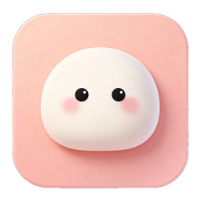
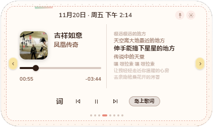
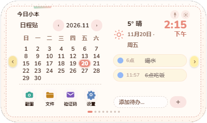
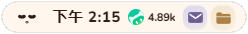
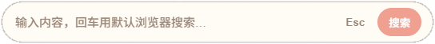
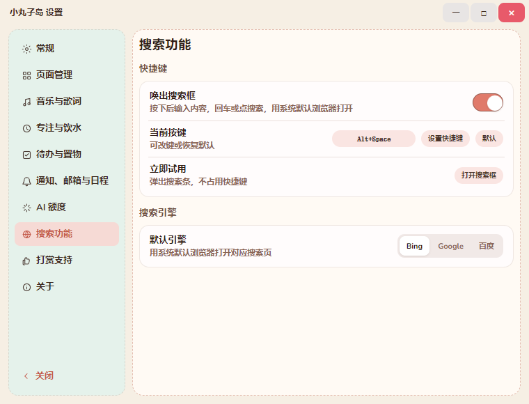
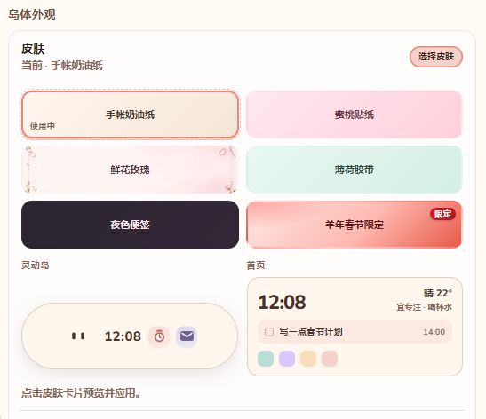

01 / 收起
安静胶囊，信息刚刚好
贴在屏幕顶部或左右边缘，显示时钟、电量、AI 额度、正在播放的歌词，以及截图、邮箱、文件夹入口。无操作 45 秒后还会切换待机表情。
可爱表情AI 额度电量时钟岛上歌词专注

小丸子岛 下载 v2.0.5小丸子岛贴在屏幕边缘：收起是一颗安静胶囊，展开是一张奶油纸面板。日程、待办、音乐歌词、截图、验证码和 AI 额度，都在抬手之间。



不占地方的时候安静待着，需要的时候一次展开。所有模块都能在设置里开关、排序。
贴在屏幕顶部或左右边缘，显示时钟、电量、AI 额度、正在播放的歌词，以及截图、邮箱、文件夹入口。无操作 45 秒后还会切换待机表情。
点击或悬停展开八页功能板，左右箭头翻页，页码圆点定位。面板可以钉住不收起，也可以随时从齿轮进入设置。
不是又一个常驻工具栏，而是把每天会顺手点开的小东西，收进同一张面板。
月历、天气、时钟与最近待办聚在一页，随手添加待办，一眼知道今天要做什么。
读取系统正在播放的媒体会话，显示封面、歌名、进度与同步歌词；支持网易云、QQ 音乐、喜马拉雅等。
番茄钟与喝水记录放在同一页：专注 / 休息计时、每日目标、提醒间隔与喝水进度。
剪贴板文字历史、自动入库的截图、应用快捷贴纸，以及按类型分组的文件夹浏览。
带时间与重复规则的清单：一次、工作日或每天，完成后勾选，日程到点会提醒。
绑定 IMAP 邮箱后识别邮件中的验证码，直接弹在岛上，点一下就能复制。
集中查看 WorkBuddy、DeepSeek、Codex、Claude、Kimi 等 9 家账号的积分、余额或用量。
在月历上按日添加日程、提示、闹钟和备注，到点弹出提醒，重复日程也能安排。
任何界面按下快捷键，输入内容回车，用系统默认浏览器打开搜索结果；Esc 随时收起。

输入即搜 · 不打断当前窗口
在设置里点一下皮肤卡片即可预览并应用，胶囊与首页面板会一起换上对应配色。

从皮肤到快捷键，每一处都能按自己的习惯摆。
设置里可以查看第三方声明、检查更新；云消息和版本更新也会在岛上弹出提示。
胶囊上的状态组件、面板里的功能页，都能开关和拖动排序；常用的软件、文件夹、网页还能做成快捷贴纸上岛。
自动避让常用浏览器与全屏窗口，支持极简形态、多显示器、80%–150% 缩放，以及单击或悬停展开。
验证码、新邮件、截图入库、日程闹钟、该喝水了、专注结束与版本更新，都会在岛上短提示。
使用问题、功能建议或合作，都欢迎来信。